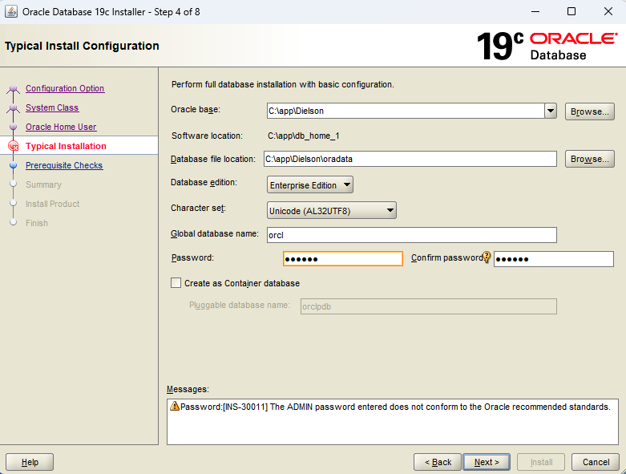
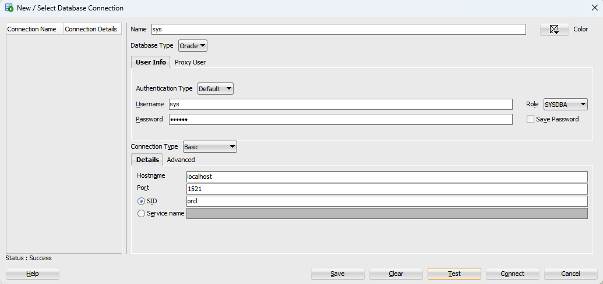
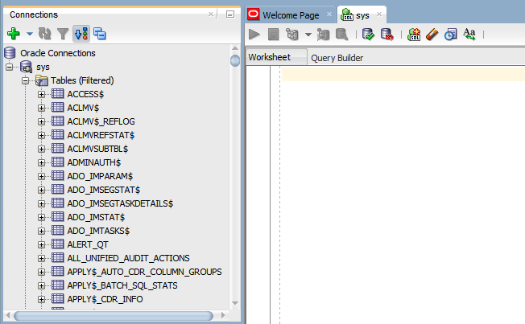
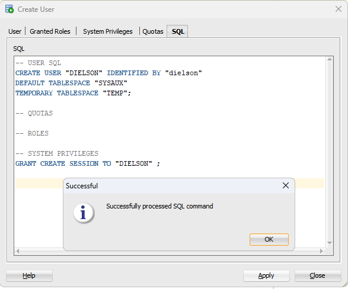
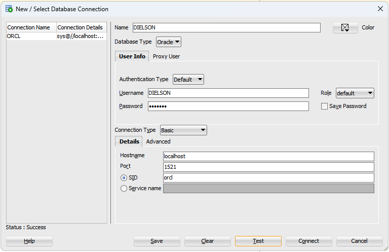

Installing an Oracle Database for the first time
Dec 10, 2022
In this article, I mean to document my journey planning, installing and deploying an Oracle database for the first time. Learning this was a requirement to do some projects in my database classes in college, so it’ll be useful to document things here while it’s still fresh in my mind.
Environment
All steps in this article were done on a Windows 11 instance running on top of VMWare, and macOS Monterey being the host OS.
Understanding the different concepts in Oracle
The first thing that was a surprise for me when learning to use an Oracle database was that the concepts present in other databases are a bit different here.
For instance, in MySQL you can connect to the database
with any user and then use the command use
<db_name> to switch to the database you
want, and each database is isolated from each other.
Oracle databases don’t work like that, because each
database is like a whole separate installation with
different configurations and different users. The closer we
have to the MySQL concept of db is a
scheme, which in the Oracle world is nothing
more than an user. A scheme/user can only see the
the parts of the database that belong to itself or to other
users that granted it permission to do so, so by switching
users and managing permissions, you get to change what
tables each user can see and modify.
Installing the Database
The Windows installer used was downloaded from the official Oracle website. An user acount is needed to download the installer, but except from that, the process is straightforward and I was pleasantly surprised to discover that even the Enterprise Editions of the database are free for personal use and self learn.
The database downloaded was the Oracle Database 19c
version 19.3 Enterprise Edition (because I want to play
around with the nice tools it has). The Windows installer is
2.89GB compressed and after being uncompressed the whole
folder has 6.05GB and a setup.exe binary with a
lot of folders.
OBS: An inportant catch here is that
when you click setup.exe, the database home folder will be
the same unzipped folder. So the first I had to do was to
move it somewhere else. I created a folder
C:\app and renamed the extracted folder to
db_home_1 (the numbering comes from the fact we
can have multiple Oracle home folders), placing everything
under C:\app\db_home_1. This seems to be the
recommended or at least standardized folder structure
adopted by Oracle admins.
After executing the setup binary, a setup wizard is started to guide the whole installation process. The choices selected were:
- Configuration Option → Create and configure a single instance database;
- System Class → Desktop class;
- Oracle Home User → Use virtual account;
Oracle says that:
This Oracle Home User is used to run the Windows services for an Oracle home, and is similar to the oracle user on Oracle Database on Linux. This user is associated with an Oracle home and cannot be changed to a different user post installation. […] For enhanced security, Oracle recommends that a standard Windows User Account be chosen.
In the Typical Installation step, I filled the form with
mostly default values, but set my Oracle base to the folder
inside C:\app\Dielson (since my OS user folder
is Dielson). Using C:\app\<user> seems to
be another standard adopted by Oracle admins:

One of the most important configuration options in the installation processI’ll also set the password (in this case, the
sys user password of the database) to
oracle, even though it gives us a warning that
it’s a weak password. I’ll also set Create as Container
database check disabled for this example, since it
introduces unneeded complexity (and I’m yet to understand
how pluggable databases affect the DDL commands in detail).
After that, the other steps just finish the whole
installation.
Adding the environment variables
To have the Oracle command-line scripts available to us
from the command line, it’s necessary to set the environment
variables. Going to Settings > System > Advanced
System Settings, in the Advanced tab click
Environment Variables and add a new entry in
the System Variables named
Oracle Home and with value
C:\app\db_home_1. Then edit the
PATH variable and add a new entry like
%ORACLE_HOME%\bin. In my case, there was
already a full path pointing to
C:\app\db_home_1\bin, but I deleted that in
favor or using the ORACLE_HOME variable
instead.
Connecting to the database using SQL Developer
I downloaded and installed SQL Developer, which is an Oracle UI tool to manage an Oracle database visually as well as running custom SQL/DDL commands. I created a new connection with the database using the following parameters (the password is whatever you set at the install process):


When connected to the database, it’s possible to expand and see all the tables owned by that user
Here I can see that the sys user/scheme has
a bunch of tables, views, indexes etc. which are all used to
get information about the database as a whole. This seems
like a lot of pollution at first, but remember that if a
user isn’t owner of a table it won’t see that table, so we
can create users/schemes that show the Tables section
completely clean.
Managing users
From that, I tried creating a new “non-dba” user for myself in SQL Developer and it seemed to work fine. As I’ve learned leater on, it’s important to create the username all UPPERCASE otherwise you’re gonna have to use quotes all the time when connecting on SQL Developer, which makes it kind of weird:

Now it’s possible to create a connection with the database using my newly created user:

Since my new user doesn’t own any table and wasn’t given access to any specific table, the tables, views, indexes, pages etc. will be all empty for now.
References
FERNANDEZ, Ignatius. 2015. Beginning Oracle Database 12c Administration – From Novice to Professional. 2nd Edition. Apress.
Oracle. Oracle Database 12c – Introducing the Oracle Home User in Oracle Database 12c for Microsoft Windows. Accessible on: link.
SHARMA, Manish. 2019. How to Install Oracle Database 19c on Windows 10 by Manish Sharma. Manish Sharma YouTube channel. Accessible on: link.